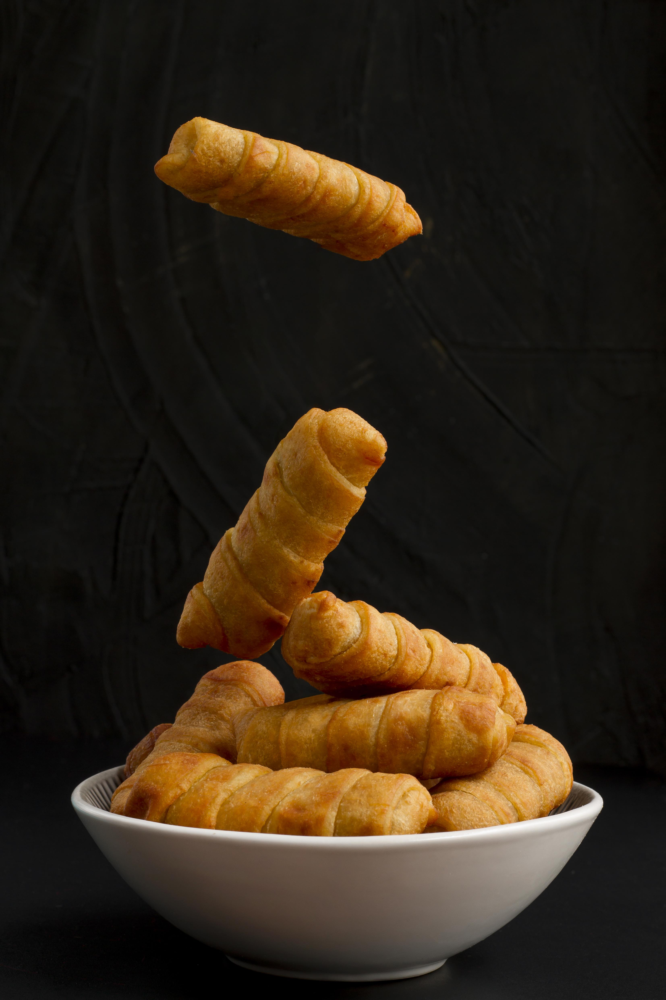

Tequeños

Ingredients
- 1.5 cups all-purpose flour
- 3.5 tsp baking powder
- 1 tbsp white sugar
- 0.25 tsp salt
- 1.25 cups milk
- 3 tbsp melted butter
- 1 egg
- optional: 1 vanilla extract teaspoon
Steps
- Mix dry ingredients: Mix the flour, baking powder, sugar, and salt in a large bowl.
- Add wet ingredients: Make a well in the center and add the milk, egg, melted butter, and vanilla. Stir gently until there are no large lumps.
- Cook: Heat a skillet over medium heat with a little oil or butter. Pour a quarter cup of batter for each pancake.
- Flip: Cook until bubbles appear on the surface (2–3 minutes), flip, and let brown on the other side for another minute.
Home